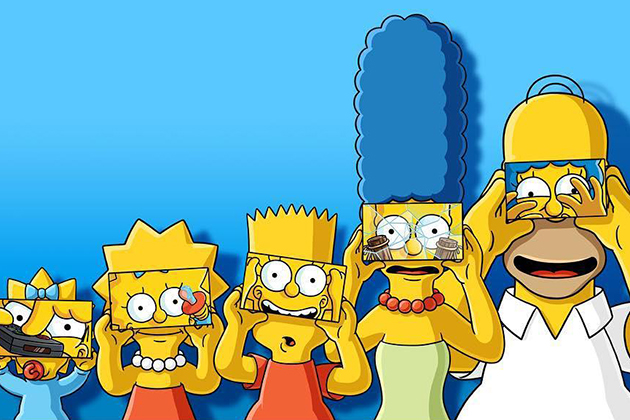
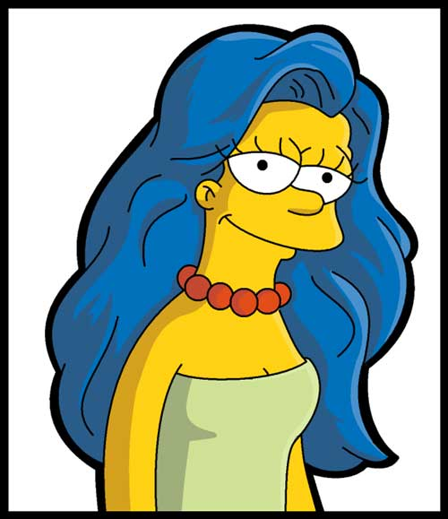

Сімпсони являють собою типову родину, що мешкає у вигаданому «середньому американському місті» Спрингфілд. Батько родини, Гомер, працює інспектором безпеки на Спрингфілдській атомній електростанції. Лінивий, страждає ожирінням. Дуже любить свою сім'ю, хоч не завжди це показує. Його дружина Мардж — стереотипна американська домогосподарка і мати. У родині троє дітей: Барт — десятирічний непослух та хуліган; Ліса — не по літах розвинена восьмирічна дівчинка і Меґґі — немовля, що в основному спілкується за допомогою звуків смоктання. Сім'я має пса на прізвисько Маленький Помічник Санти і кота Сніжка ІІ, які також отримували провідні ролі в певних серіях. Не зважаючи на події, що вказують на плин часу (щорічні свята і дні народження) персонажі «Сімпсонів» не старішають і мають такий самий вигляд, як і наприкінці 1980-х років. Протягом усіх серій одягнені у той самий одяг
Homer
Oдин із головних героїв мультсеріалу «Сімпсони». Гомер — грубий і неввічливий батько родини, він має очевидні вади: товстий, лисий і не дуже розумний. Нерідко він поводиться як блазень, абсурдно, егоїстично і нетактовно, але все ж лишається симпатичним.
Гомер має трьох дітей: Барта, Лісу і Меґґі. Працює на Спрингфілдській атомній електростанції інспектором з безпеки. Гомер дуже лінивий і багато п'є.
За декілька років він перетворився на культового персонажа у США та багатьох інших країнах світу.
Вік Гомера — 36—39 (в різних сезонах), і протягом останніх 9-10 років він працює інспектором безпеки на Спрінґфілдській атомній електростанції, в секторі 7G, хоча там він з'являється дуже рідко, а якщо це і трапляється, то вся його «робота» зводиться до дрімання і поїдання пончиків. Велику частину вільного часу він проводить в таверні Мо. Удома його часто можна застати за бездумним переглядом телепрограм, і їсть Гомер під час перегляду висококалорійні закуски — шоколад, чіпси та улюблене пиво «Кнур».
Margh

Oдин з головних персонажів анімаційного серіалу Сімпсони, дружина Гомера Сімпсона, мати Ліси і Барта. Домогосподарка, майже весь свій час проводить удома доглядаючи наймолодшу дитину Меґґі, а також Барта, Лісу і чоловіка. Найвідоміша особливість героїні — блакитне волосся зібране у високу зачіску — «вулик». Мардж названо на честь матері творця серіалу Мета Ґрейнінґа Марґарет (Мардж) Ґрейнінґ.
Мардж є втіленням стереотипного образу «матері» у ситкомах, якій часто притаманна наївність і довірливість. Незважаючи на високу «моральність», у порівнянні з іншими персонажами, Мардж також нерідко брала участь у різноманітних пригодах і витівках протягом усієї історії шоу. Серед таких: короткочасна служба у спринґфілдській поліції, лікування від «дорожньої люті», ув'язнення за пограбування магазину, нездорова пристрасть до азартних ігор, потяг до алкоголю, передозування стероїдами, шахраювання на кулінарному конкурсі та стан амнезії.
Bart

Oдин із головних героїв мультиплікаційного серіалу Сімпсони. Барт — найстарша дитина Гомера і Мардж Сімпсон. У нього також є дві молодші сестри — Ліса і Меґґі. Барт є втіленням образу бешкетника та посереднього учня у школі. Разом зі своїм батьком Барт є одним із найвідоміших персонажів у цьому серіалі.
Вік Барта — 10 років, а в одній із серій на запитання Гомера він відповідає, що його день народження — 23 лютого.
Найвизначніші риси характеру Барта: непослух, бешкетництво, бунтарство, неповага до авторитетів, дотепність. Протягом перших двох сезонів Барт виступав головним героєм серіалу; пізніше увагу більше сфокусувало на Гомері. Втім, Барт залишається одним із найголовніших персонажів в історії телевізійної мультиплікації США.
Lisa
Персонаж анімаційного телесеріалу «Сімпсони», озвучена Ярдлі Сміт. Автор серіалу Мет Ґрейнінґ назвав героїню іменем своєї сестри.
Ліса — надзвичайно розумна восьмирічна дівчинка, один з найрозумніших персонажів серіалу (за даними різних серій її IQ становить 156 чи 159). Також грає на саксофоні. Полюбляє дивитися мультфільм «Чух і Сверблячка» разом з сім'єю.
За політичними переконаннями Ліса — типовий соціальний ліберал. Вона дотримується вегетаріанства і підтримує рух визволення Тибету. Будучи вихованою християнською родиною, дівчинка згодом стає буддисткою (на знак протесту проти комерціалізації церкви). Крім того вона підтримує дарвінізм і теорію еволюції, називаючи Дарвіна «одним з найбільших розумів» усіх часів, і висловлює захоплення неоязичницькою релігією вікка.
Maggie
Oдна з головних героїв мультсеріалу Сімпсони, найменша дочка Гомера Сімпсона та Мардж Сімпсон. Протягом усіх років серіалу Меґґі не росте і завжди залишається немовлям у повзунках та підгузнику. Незважаючи на свій вік Меґґі потрапляє в різні пригоди разом з своїм братом Бартом та сестрою Лісою. В одому з серіалів про майбутнє Ліси, Меґґі з'являється дорослою, але навіть там у неї немає слів. Ідею цього персонажу Мет Ґрейнінґ запозичив від своєї молодшої сестри Меґґі Ґрейнінґ.
Меґґі — для своїх років надзвичайно розвинута дитина. Така ж розвинена, як і її старша сестра Ліса. Вона довела, що може бути самостійною: після спецрозвиваючого курсу до кінця епізоду перестала потребувати допомоги матері і врятувала батька з ув'язнення в іншому місті.
Меґґі досить тепло ставиться до людей. Але є у неї і ворог — однобровий малюк Джеральд. У 18 серії 25 сезону було показано як в майбутньому вони цілуються.
Серед членів сім'ї Меґґі особливо виділяє маму. Гомер постійно забуває ім'я Меґґі і навіть те, що у нього взагалі є третя дитина, що є однією з повторюваних жартів серіалу.